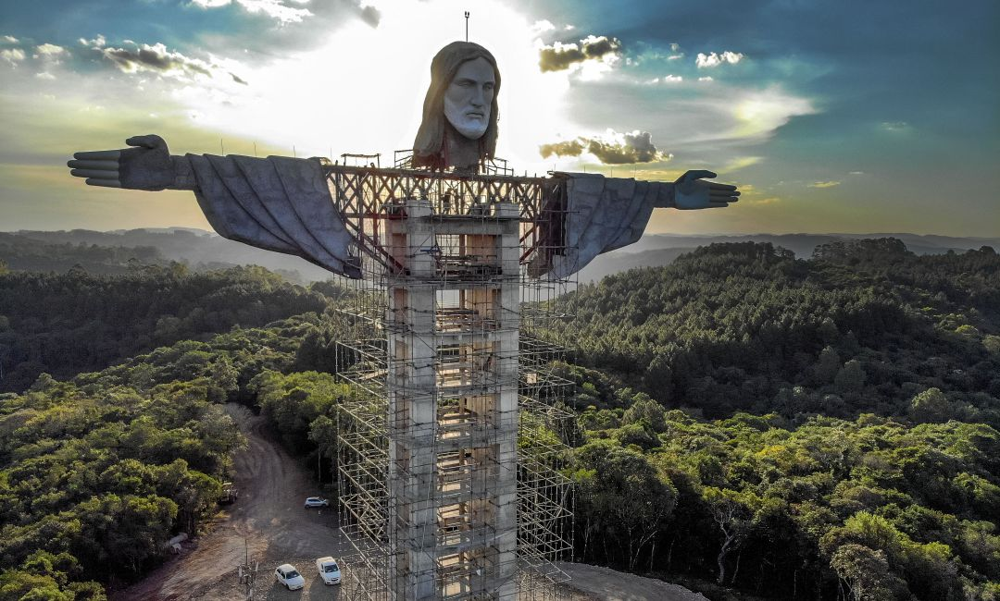

seção detalhando a história por trás do Cristo Redentor
Aqui voce vai ter acesso a uma seção detalhando a história por trás do Cristo Redentor, desde sua concepção até sua conclusão.

história por trás do Cristo Redentor
A história por trás do Cristo Redentor é fascinante e envolve diversos eventos e pessoas importantes. A seguir, detalho a história desde sua concepção até sua conclusão:
- Concepção e projeto
- Em 1921, foi proposta a construção de uma estátua no topo do morro do Corcovado como parte das comemorações do centenário da independência do Brasil, a ser celebrado em 1922.
- Um concurso nacional foi realizado para selecionar o projeto da estátua, e o arquiteto brasileiro Heitor da Silva Costa foi escolhido como vencedor. Ele colaborou com o engenheiro Albert Caquot e o escultor francês Paul Landowski para a execução do projeto.
- Captação de recursos
- A construção do Cristo Redentor exigia recursos financeiros significativos. O processo de captação de recursos foi liderado pelo padre francês Pierre-Marie Boss, que propôs a ideia e mobilizou a Igreja Católica e a sociedade brasileira para obter doações.
- A campanha para arrecadar fundos contou com o apoio de diversas pessoas e instituições, e doações foram feitas tanto no Brasil quanto em outros países. A população brasileira, em especial, abraçou a ideia e contribuiu generosamente.
- Construção
- A construção do Cristo Redentor começou em 1922. O trabalho envolveu a criação de um sistema ferroviário para transportar materiais e trabalhadores até o topo do morro do Corcovado.
- A estátua foi construída utilizando uma estrutura de ferro, revestida com pedra-sabão. O esqueleto interno de ferro foi projetado pelo engenheiro Albert Caquot, enquanto a escultura da estátua propriamente dita foi realizada pelo escultor francês Paul Landowski.
- A construção enfrentou desafios técnicos, como a dificuldade de acesso ao local e a necessidade de proteção contra intempéries. Apesar dessas dificuldades, a estátua começou a tomar forma ao longo dos anos.
- Conclusão e inauguração
- O Cristo Redentor foi finalmente concluído em 1931, após nove anos de trabalho. Sua inauguração oficial ocorreu em 12 de outubro daquele ano.
- A cerimônia de inauguração contou com a presença de milhares de pessoas e foi marcada por discursos, apresentações musicais e celebrações religiosas.
- Desde então, o Cristo Redentor se tornou um símbolo icônico do Rio de Janeiro e do Brasil, atraindo turistas de todo o mundo e sendo reconhecido como uma das Sete Maravilhas do Mundo Moderno em 2007.
A história do Cristo Redentor é uma prova da perseverança e da determinação do povo brasileiro em concretizar um projeto grandioso. A estátua se tornou um símbolo duradouro de fé, união e paz, além de ser um testemunho da habilidade arquitetônica e da engenhosidade daqueles que a conceberam e construíram.
Informações sobre o arquiteto e os engenheiros envolvidos na construção
- Arquiteto - Heitor da Silva Costa
- Heitor da Silva Costa foi o arquiteto responsável pelo projeto e supervisão da construção do Cristo Redentor.
- Nascido em 1873, no Rio de Janeiro, Silva Costa estudou na Escola Nacional de Belas Artes do Brasil e se destacou como um talentoso arquiteto.
- Ele venceu o concurso para o projeto do Cristo Redentor em 1922, superando outros concorrentes renomados.
- Silva Costa incorporou elementos do estilo art déco ao projeto, combinando a grandiosidade arquitetônica com a beleza escultural da estátua.
- Engenheiro - Albert Caquot
- Albert Caquot, um engenheiro francês, foi contratado para projetar a estrutura interna do Cristo Redentor.
- Nascido em 1881, Caquot era conhecido por suas contribuições significativas no campo da engenharia civil e estrutural.
- Ele projetou um esqueleto interno de ferro para a estátua, garantindo sua estabilidade e resistência.
- O projeto de Caquot permitiu que o Cristo Redentor resistisse a condições climáticas adversas, como ventos fortes e raios.
- Escultor - Paul Landowski
- Paul Landowski, um renomado escultor francês, foi o responsável pela criação da escultura do Cristo Redentor.
- Nascido em 1875, Landowski já havia trabalhado em diversas obras notáveis em seu país de origem.
- Ele foi contratado para esculpir a estátua do Cristo Redentor com base no projeto de Heitor da Silva Costa.
- Landowski trouxe habilidade e sensibilidade artística à estátua, dando vida à representação de Jesus Cristo com seus detalhes e proporções precisas.
A colaboração entre Heitor da Silva Costa, Albert Caquot e Paul Landowski foi essencial para a concretização do projeto do Cristo Redentor. A combinação do talento arquitetônico de Silva Costa, a expertise em engenharia de Caquot e a habilidade artística de Landowski resultou em uma estátua icônica que se tornou um símbolo duradouro da fé, da paz e da identidade brasileira.
Desafios enfrentados durante a construção
Durante a construção do Cristo Redentor, foram enfrentados diversos desafios significativos. Aqui estão alguns detalhes interessantes sobre os principais desafios enfrentados:
Acesso ao local: O morro do Corcovado, onde o Cristo Redentor está localizado, apresentava um terreno íngreme e acidentado. Para transportar os materiais e trabalhadores até o topo do morro, foi necessário construir um sistema ferroviário com trilhos e trens especialmente projetados. Essa infraestrutura permitiu o transporte eficiente dos materiais e a chegada dos trabalhadores ao local de construção.
Proteção contra intempéries: O Cristo Redentor fica exposto a condições climáticas adversas, como ventos fortes, chuvas intensas e raios. Para garantir a durabilidade e a proteção da estátua, foram adotadas medidas de engenharia especiais. A estrutura interna de ferro projetada por Albert Caquot foi projetada para resistir a ventos de até 200 km/h, e foram instalados para-raios para proteger a estátua contra descargas elétricas.
Escassez de recursos financeiros: A construção do Cristo Redentor exigia recursos financeiros consideráveis. Durante o período de construção, houve momentos em que os recursos eram escassos, o que levou a atrasos na obra. No entanto, o projeto recebeu apoio de doações tanto do governo brasileiro quanto de pessoas e instituições, permitindo que a construção fosse concluída.
Desafios técnicos da escultura: A criação da escultura em si também apresentou desafios. Paul Landowski, o escultor responsável, precisou enfrentar a tarefa de transformar o projeto de Heitor da Silva Costa em uma estátua tridimensional de grande porte. Ele teve que lidar com questões de proporção, equilíbrio e detalhes artísticos para criar a figura de Jesus Cristo que é conhecida hoje.
Coordenação e logística: A construção do Cristo Redentor envolveu uma equipe de engenheiros, arquitetos, escultores e trabalhadores especializados. A coordenação de todos esses profissionais e a logística de trazer os materiais necessários até o local foram um desafio em si. A supervisão de toda a operação e a garantia de que o trabalho fosse realizado de acordo com os planos exigiram uma gestão eficiente.
Apesar dos desafios enfrentados, a construção do Cristo Redentor foi concluída com sucesso, resultando em um monumento icônico e duradouro. A superação desses obstáculos demonstra a determinação e a habilidade dos profissionais envolvidos no projeto, bem como a importância e o significado atribuídos à estátua pelo povo brasileiro.